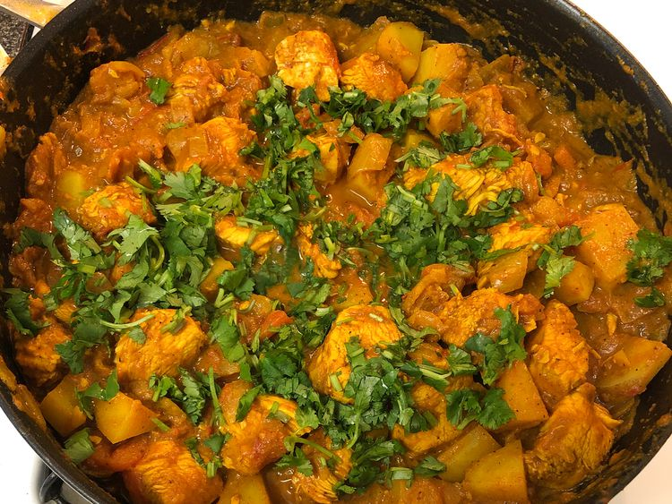

Chicken Curry

Description
This is one of the most favourite and delicious fried recipes in Bangladesh. Especially on occasions,
like Eid-Ul-Adha,this crispy samosas,
with juicy fried beef inside and fried into oil, are made and enjoyed.
The outer layer is made from rice flour usually and sometimes from corn
flour. Inside it fried beef is put
and rolled into a triangular shape. Then it's fried into boiling oil. Served with various sauces, this dish is enjoyed.
Ingredients
- 2 large potatoes, peeled
- 2 tablespoons vegetable oil
- ½ teaspoon cumin seeds
- 1 bay leaf, crushed
- 1 pound ground beef
- 2 large onions, finely chopped
- 4 cloves garlic, crushed
- 1 tablespoon minced fresh ginger root
- 1 ½ teaspoons salt
- 1 teaspoon ground cumin
- 1 teaspoon ground coriander
- 1 teaspoon ground turmeric
- ½ teaspoon ground cinnamon
- 1 quart oil for deep frying
- 2 tablespoons chopped green chile peppers
- 1 (16 ounce) package phyllo dough
Steps
-
Bring a medium saucepan of lightly salted water to a boil. Stir in potatoes; cook until potatoes are tender
but still firm, about 15 minutes. Drain, mash together, and set aside.
-
Meanwhile, heat 2 tablespoons oil in a large saucepan over medium-high heat. Add cumin seeds and bay leaf;
stir until fragrant and seeds are browned. Add ground beef and onions; cook until beef is browned and crumbly
and onions are soft, about 5 to 7 minutes.
-
Stir in garlic and ginger. Season with salt, cumin, coriander, turmeric, chili powder, cinnamon, cardamom, and
black pepper. Stir in the mashed potato mixture. Remove from heat and chill in the refrigerator for 1 hour, or
until cool.
-
Heat 1 quart of oil in a deep saucepan over medium heat.
-
Mix green chile peppers into potato and beef mixture. Place approximately 1 tablespoon of the mixture
onto each phyllo sheet. Fold sheets into triangles, pressing edges together with moistened fingers.
-
Lower samosas carefully into the hot oil in batches. Fry until golden brown, about 3 minutes. Transfer
to a paper towel-lined plate to drain. Repeat with remaining samosas. Serve warm.
Enjoy....
Go to the recipie home page...
Photo and recipe credit: All Recipes